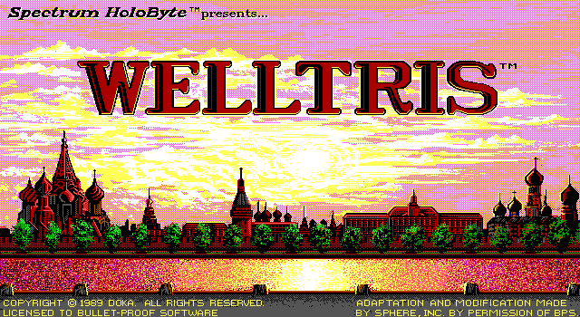
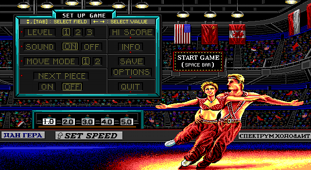
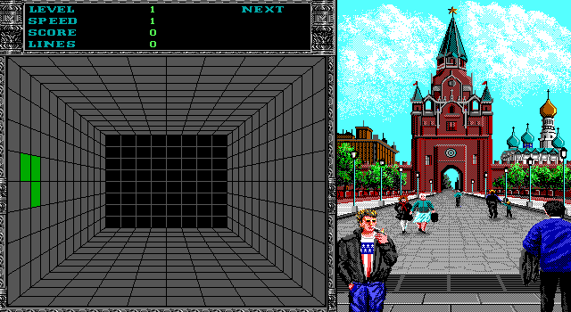

名稱：俄羅斯方塊2／3D俄羅斯 (Welltris，英文版)
簡介：1989年Doka開發、Sphere改編的俄羅斯方塊遊戲，由Spectrum HoloByte代理發行，台
灣由智冠代理進口 [待補]。



備註：本版為1990年版（智冠版為1989年版）
保護：手冊圖案密碼，破解碼：
WELLTRIS.EXE
44 44 E8 69 42 (不用輸入密碼，限1989年版)
-- -- 90 90 90
B6 00 3B C2 74 09 (共2處)
-- -- -- -- EB --
或
B6 00 3B C2 74 09 (共2處)
-- -- -- -- EB --
02 B6 00 3B C2 74 04 (密碼隨便輸入)
-- -- -- -- -- EB --
備註：執行檔WELLTRIS.EXE後接參數：
E = 使用EGA顯示卡
C = 使用CGA顯示卡
H = 使用單色顯示卡
R = 反白顯示